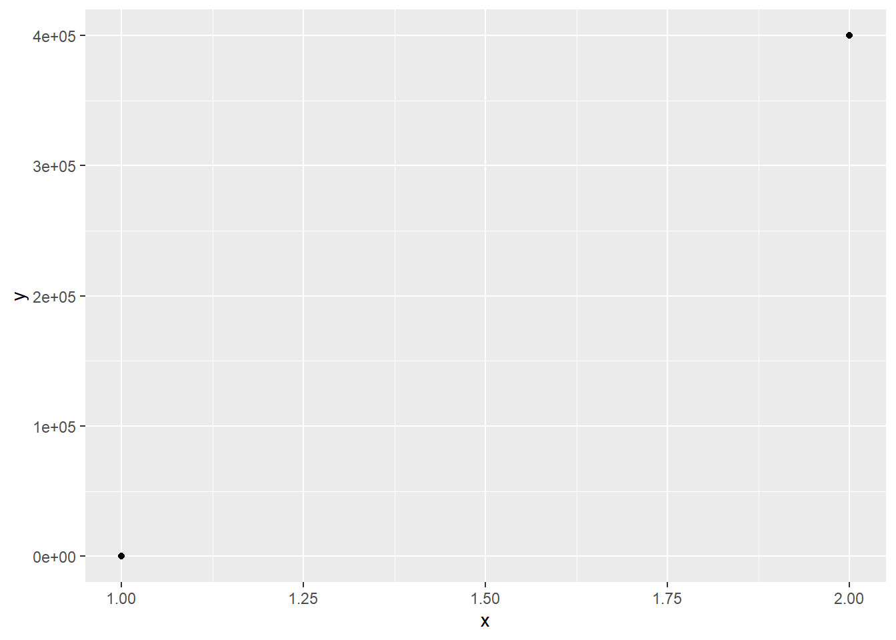
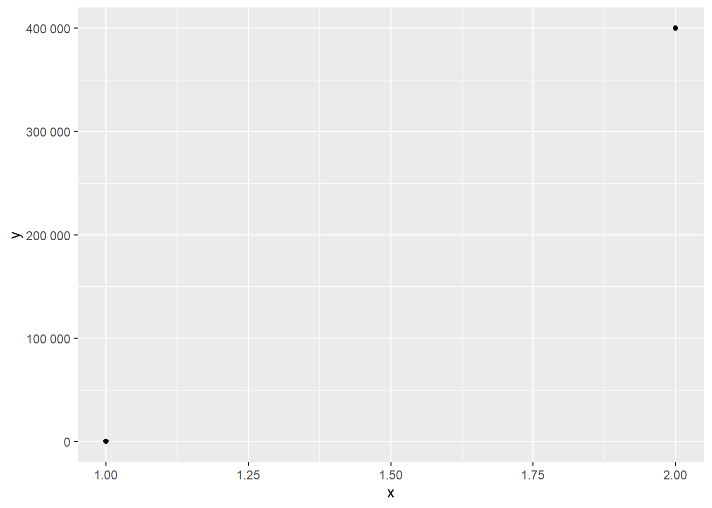
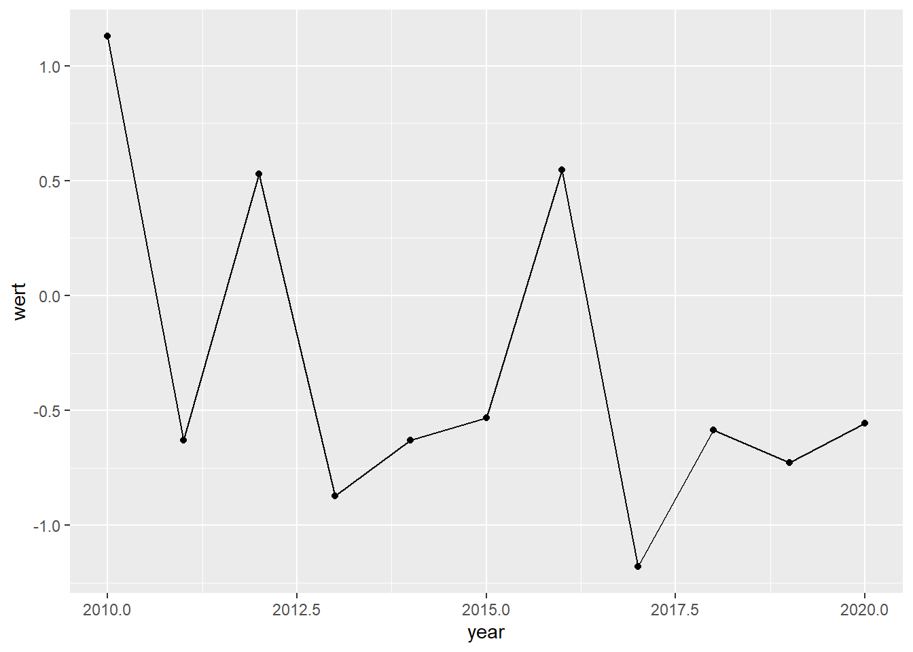

(F)AQs
Hier werden (häufig) gestellte Fragen und Antworten gesammelt:
TidyTuesday-Daten einlesen
Das Problem:
Nach dem Einlesen, können die Daten nicht mit den üblichen Befehlen bearbeitet werden:
library(tidyverse)
library(tidytuesdayR)
daten <- tidytuesdayR::tt_load(2022, week = 2)##
## Downloading file 1 of 2: `colony.csv`
## Downloading file 2 of 2: `stressor.csv`Die Lösung
TidyTuesday-Daten bestehen häufig aus mehreren Datensätzen. Mit dem
$-Operator können diese extrahiert werden:
colony <- daten$colony
stressor <- daten$stressorDann können die Objekte wie gewohnt bearbeitet werden:
colony |>
filter(colony_lost > 1000)## # A tibble: 851 x 10
## year months state colony_n colony_max colony_lost colony_lost_pct
## <dbl> <chr> <chr> <dbl> <dbl> <dbl> <dbl>
## 1 2015 January-March Alabama 7000 7000 1800 26
## 2 2015 January-March Arizona 35000 35000 4600 13
## 3 2015 January-March Arkansas 13000 14000 1500 11
## 4 2015 January-March Californ~ 1440000 1690000 255000 15
## 5 2015 January-March Colorado 3500 12500 1500 12
## 6 2015 January-March Florida 305000 315000 42000 13
## 7 2015 January-March Georgia 104000 105000 14500 14
## 8 2015 January-March Idaho 81000 88000 3700 4
## 9 2015 January-March Illinois 6000 10500 4200 40
## 10 2015 January-March Indiana 9000 9500 2100 22
## # ... with 841 more rows, and 3 more variables: colony_added <dbl>,
## # colony_reno <dbl>, colony_reno_pct <dbl>Im Allgemeinen können Informationen zu den TidyTuesday-Daten im Hilfefenster angezeigt werden, wenn der Name des Objekts, in dem die Daten zwischengespeichert wurden, ausgeführt wird. Hier:
datenZahlen auf Achsen werden in wissenschaftlicher Notation angezeigt
Das Problem:
In ggplot werden Zahlen auf den Achsen standardmäßig in der wissenschaftlichen Notation (scientific notation) dargestellt, wenn die Zahlen groß oder klein werden:
library(tidyverse)
# Beispieldaten
(daten <- tibble(x = 1:2, y = c(0, 400000))
)## # A tibble: 2 x 2
## x y
## <int> <dbl>
## 1 1 0
## 2 2 400000# Problemplot
daten |>
ggplot(aes(x = x, y = y)) +
geom_point()
Die Lösung
Das Paket scales bietet eine Funktion number_format(),
mit der dieses Verhalten verändert werden kann:
daten |>
ggplot(aes(x = x, y = y)) +
geom_point() +
scale_y_continuous(labels = scales::number_format()) 
Zusätzlich kann bei Bedarf das im Deutschen gebräuchliche Tausendertrennzeichen und das Komma als Dezimaltrennzeichen festgesetzt werden:
daten |>
ggplot(aes(x = x, y = y)) +
geom_point() +
scale_y_continuous(labels = scales::number_format(big.mark = ".", decimal.mark = ","))
Jahreszahlen auf Achsen werden mit Kommastellen angezeigt
Das Problem:
Wenn Jahreszahlen nicht explizit als solche definiert sind, werden diese als Zahlen behandelt, was zur unerwünschten Darstellung von Kommastallen und “krummen” Jahreszahlen führen kann. Außerdem werden in der Beschriftung dann Jahre ausgelassen:
library(tidyverse)
#Daten generieren
(daten <- tibble(year = 2010:2020,
wert = rnorm(n = length(year), mean = 0, sd = 1)
)
)## # A tibble: 11 x 2
## year wert
## <int> <dbl>
## 1 2010 1.13
## 2 2011 -0.629
## 3 2012 0.529
## 4 2013 -0.873
## 5 2014 -0.630
## 6 2015 -0.532
## 7 2016 0.548
## 8 2017 -1.18
## 9 2018 -0.586
## 10 2019 -0.727
## 11 2020 -0.555# Problemplot
daten |>
ggplot(aes(x = year, y = wert)) +
geom_line() +
geom_point()
Die Lösung
Eine schnelle Lösung ist es, die Labels für die Jahre “hardzucoden”:
daten |>
ggplot(aes(x = year, y = wert)) +
geom_line() +
geom_point() +
scale_x_continuous(breaks = 2010:2020)
Eine allgemeingültigere Lösung ist es, die Jahreszahlen auch in R als Datum zu hinterlegen und die Darstellung auf den Achsen auf die Jahre zu beschränken. In diesem Beispiel führt dies zum gleichen Ergebnis:
daten |>
mutate(year = paste0(year, "-01-01")) |> #Jahreszahl um Monat und Tag erweitern
mutate(year = as.Date(year)) |> #als Datum definieren
ggplot(aes(x = year, y = wert)) +
geom_line() +
geom_point() +
scale_x_date(date_labels = "%Y", #nur Jahreszahl anzeigen
date_breaks = "1 year") #Breaks zwischen den Jahren definieren